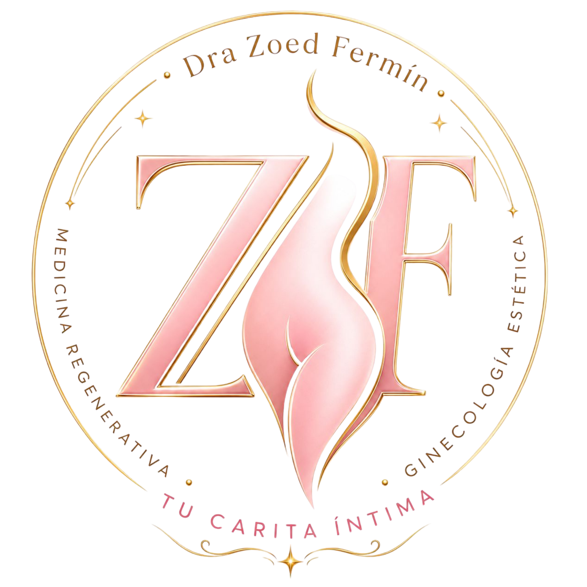
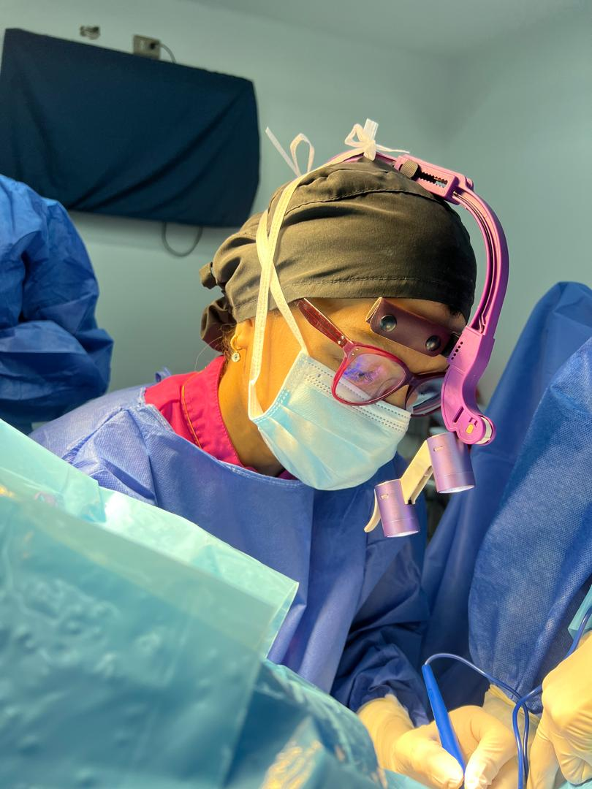
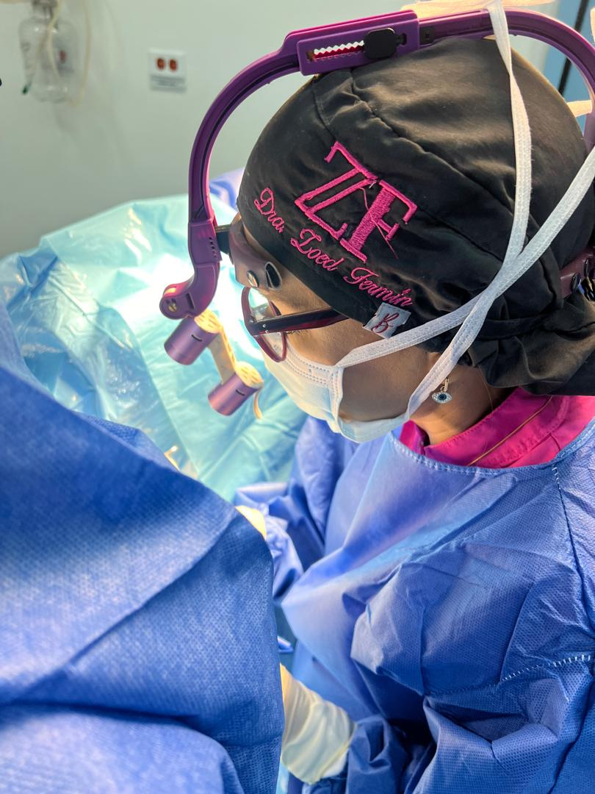
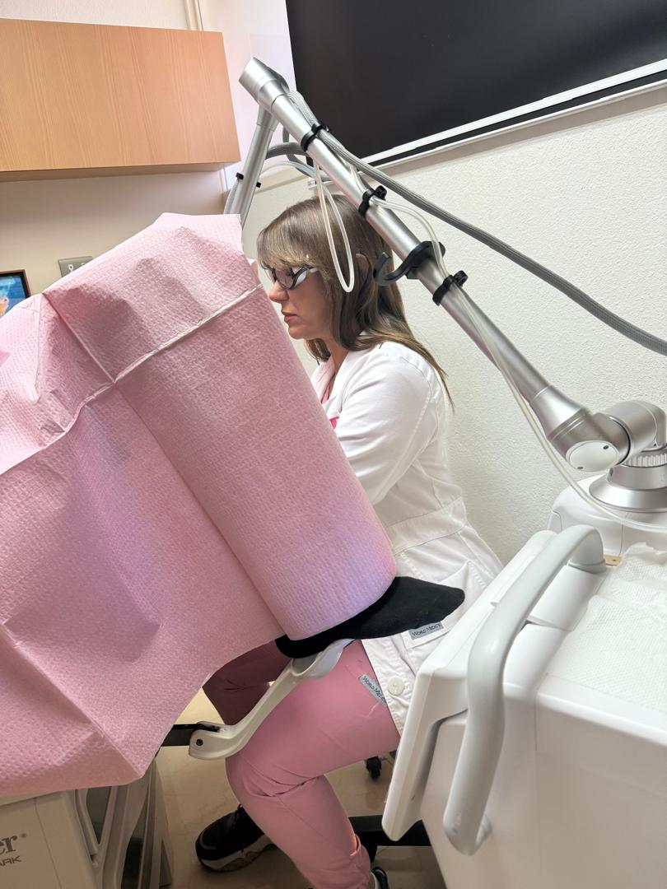

Salud íntima integral
Prevención, diagnóstico y tratamientos personalizados.

Tu Carita Íntima Dra. Zoed Fermín Agenda tu citaDra. Zoed Fermín • Ginecóloga Obstetra
Ofrezco atención médica especializada en ginecología estética, regenerativa y funcional, con enfoque en el bienestar y calidad de vida de las mujeres.

Prevención, diagnóstico y tratamientos personalizados.
Procedimientos modernos con altos estándares médicos.
Evaluación clínica, orientación hormonal y enfoque de longevidad íntima.
Atención con calidez, claridad y profesionalismo.
Sobre mí
Acompaño a las mujeres a vivir cada etapa de su vida con bienestar, confianza y plenitud, incluyendo la etapa de la menopausia.
Como especialista en Ginecología Estética, Regenerativa y Funcional, combino experiencia médica, innovación y tecnología para ofrecer soluciones personalizadas que favorecen la salud íntima, hormonal y sexual femenina.
Mi objetivo es ayudarte a sentirte saludable, segura y plena, derribando tabúes y brindándote herramientas que mejoren tu calidad de vida en cada etapa de tu evolución como mujer.


Más de 20 años de experiencia como Ginecóloga Obstetra, con formación especializada en Venezuela, Estados Unidos, España y México.
Ha desarrollado una sólida trayectoria profesional como Ginecóloga Obstetra, con práctica clínica enfocada en salud femenina integral, ginecología estética y medicina regenerativa.
Contacto
Agenda tu cita y recibe acompañamiento profesional para tu salud íntima, hormonal y sexual.
Ofrezco tratamientos medicos y quirúrgicos enfocados en la salud íntima femenina, la estetica genital, la regeneracion vulvovaginal y la funcion sexual. Cada procedimiento se realiza con evaluacion medica personalizada, tecnologia avanzada y un enfoque integral en bienestar, seguridad y resultados naturales.
ALgunos de los procedimientos que ofrezco incluyen: